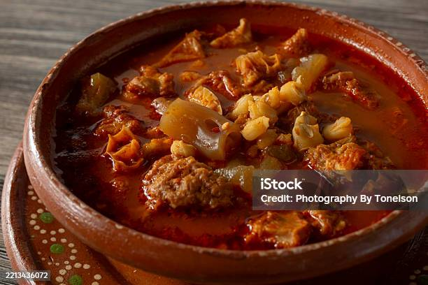

Menudo

Pork Menudo is a Filipino tomato-based pork stew with cubed pork, pig liver, hotdogs, potato, and carrot, served over warm rice. It is one of the most familiar dishes in Filipino home cooking and you will see it at family meals, town fiestas, birthdays, and on the steam table at almost every carinderia in the Philippines. The word menudo is connected to small pieces, which makes sense because everything in this dish is cut small. Source Panlasang Pinoy
Ingredients
- Pork
- Pork Liver
- Hotdog
- Potato
- Carrot
- Tomato Sauce
- Water
- Soy Sauce
- Lemon
- Onion
- Garlic
- Dried Bay Leaves
- Sugar
- Cooking Oil
- Salt and Pepper
Steps for Cooking Menudo
- Marinate the Pork. Combine the pork, soy sauce, and lemon in a bowl. Mix well and marinate for at least 1 hour. The longer you marinate, the more the pork absorbs the flavor. Overnight is even better if you have the time.
- Saute the Aromatics and Brown the Pork. Heat oil in a pan. Saute garlic and onion until the onion softens. Add the marinated pork. Cook for 5 to 7 minutes until lightly browned. Pour in the tomato sauce and water, then add the bay leaves. Make sure the onion turns soft and translucent before the pork goes in. That gives the sauce a better start.
- Simmer the Pork. Let the mixture boil, then lower the heat. Simmer for 30 minutes to an hour, depending on the toughness of the pork. Add water as necessary. Keep the heat low. The pork needs time to soften and absorb the sauce. I take it the full hour when the pork is tough.
- Finish and Serve. Add the liver and hotdogs. Cook for 5 minutes. Add the potato, carrot, sugar, salt, and pepper. Stir and cook for 8 to 12 minutes. Transfer to a serving plate. Serve with warm rice. Share and enjoy! The potato and carrot should still hold their shape but be soft enough to eat. Do not overcook them at this stage.